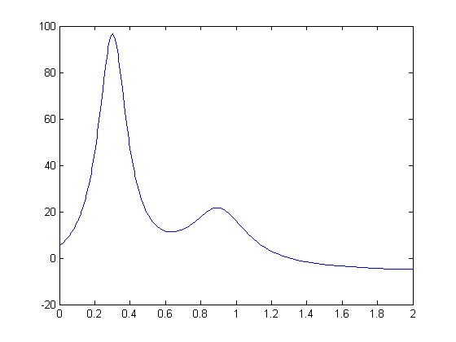
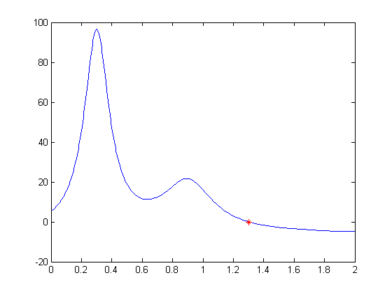
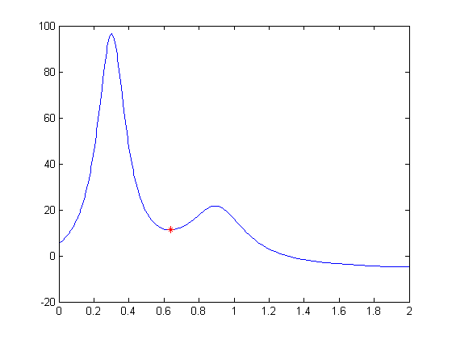
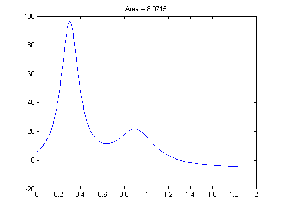

In MATLAB, one function take another as a parameter. This feature serves a wide variety of purposes. Here we illustrate its use for finding zeros, optimization, and integration.
A MATLAB function is an M-file that starts with the keyword function. This is what the function HUMPS looks like:
type humps
function [out1,out2] = humps(x) %HUMPS A function used by QUADDEMO, ZERODEMO and FPLOTDEMO. % Y = HUMPS(X) is a function with strong maxima near x = .3 % and x = .9. % % [X,Y] = HUMPS(X) also returns X. With no input arguments, % HUMPS uses X = 0:.05:1. % % Example: % plot(humps) % % See QUADDEMO, ZERODEMO and FPLOTDEMO. % Copyright 1984-2002 The MathWorks, Inc. % $Revision: 5.8 $ $Date: 2002/04/15 03:34:07 $ if nargin==0, x = 0:.05:1; end y = 1 ./ ((x-.3).^2 + .01) + 1 ./ ((x-.9).^2 + .04) - 6; if nargout==2, out1 = x; out2 = y; else out1 = y; end
This figure shows a plot of HUMPS in the domain [0,2] using FPLOT.
fplot(@humps,[0,2]);
The FZERO function finds a zeros of a function near an initial estimate. Our guess here for HUMPS is 1.
z = fzero(@humps,1,optimset('Display','off')); fplot(@humps,[0,2]); hold on; plot(z,0,'r*'); hold off
FMINBND finds the minimum of a function in a given domain. Here, we search for a minimum for HUMPS in the domain (0.25,1).
m = fminbnd(@humps,0.25,1,optimset('Display','off')); fplot(@humps,[0 2]); hold on; plot(m,humps(m),'r*'); hold off
QUAD finds the definite integral of HUMPS in a given domain. Here it computes the area in the domain [0.5, 1].
q = quad(@humps,0.5,1);
fplot(@humps,[0,2]);
title(['Area = ',num2str(q)]);
